Experiências reais
Casos e análises de quem está inserido no futebol, com o contexto que ajuda a entender cada decisão.
2ª edição Encontro de ideias. Futebol em movimento.
Conteúdo avançado, temas atuais e diferentes perspectivas
do futebol profissional de alto nível.
23, 25 e 27 de novembrode 2026 · 19h às 23h30
On-line, ao vivo e gravadoAcesso vitalício às gravações
O encontro começa em
Conheça os nomes já confirmados
O encontro
O futebol avança quando experiências se encontram.
O TotalFut Summit Internacional reúne perspectivas do mercado nacional e internacional para debater casos reais, análises de bastidores e visões práticas sobre o rumo do futebol.
Um espaço para ampliar o repertório de quem treina, analisa, prepara e toma decisões no dia a dia do jogo. Conteúdo avançado sobre temas atuais e diversos do futebol profissional de alto nível.
Veja as datas do encontroPor que estar aqui
Conhecimento que começa na experiência e ganha força na troca.
Casos e análises de quem está inserido no futebol, com o contexto que ajuda a entender cada decisão.
Perspectivas nacionais e internacionais para ampliar a maneira de pensar o jogo.
Novas referências para relacionar com os desafios e as escolhas da sua rotina profissional.
Participe ao vivo a partir das 19h e reveja as apresentações depois, com acesso vitalício ao conteúdo gravado.
Os nomes começam a ser revelados
Nove convidados já estão em campo. Os próximos nomes e temas serão anunciados em sequência.
9 nomes revelados · 2 a caminhoConvidado do Summit 2026
Palestra
Conceitos, treinamento, planificação e estratégias aplicadas ao futebol de elite
Exemplos reais de treinos, jogos e preleções para conectar a preparação das bolas paradas ao dia a dia da equipe.
Auxiliar técnico de futebol, com passagem recente pela LDU Quito, do Equador.
Experiência que vem de campo
 LDU Quito
LDU Quito Athletico-PR
Athletico-PR Cuiabá
Cuiabá Chapecoense
Chapecoense Remo
Remo Figueirense
Figueirense Joinville
Joinville Tombense
Tombense CSA
CSA São Bernardo
São Bernardo Boavista (Portugal)
Boavista (Portugal)Entre outros clubes de sua trajetória profissional.
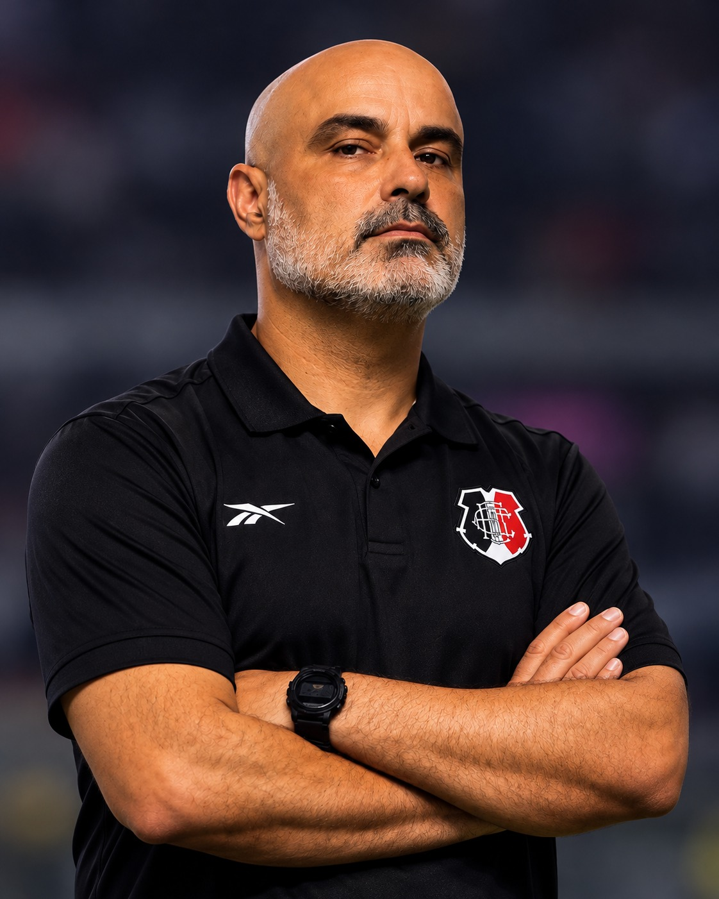
Segundo nome reveladoConvidado do Summit 2026
Palestra
Como a organização defensiva pode potencializar de forma rápida o desempenho da equipe
Marcação zonal, compactação, coberturas e pressão: princípios para organizar a equipe sem bola e responder aos diferentes contextos do jogo.
Trajetória em equipes profissionais e categorias de base do futebol brasileiro.
Experiência que vem de campo
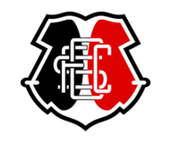
Santa Cruz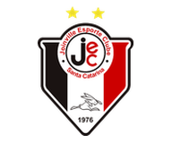
Joinville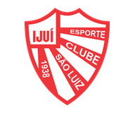
São Luiz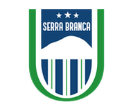
Serra Branca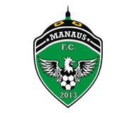
Manaus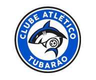
Atlético Tubarão CSA
CSAEntre outros clubes de sua trajetória profissional.
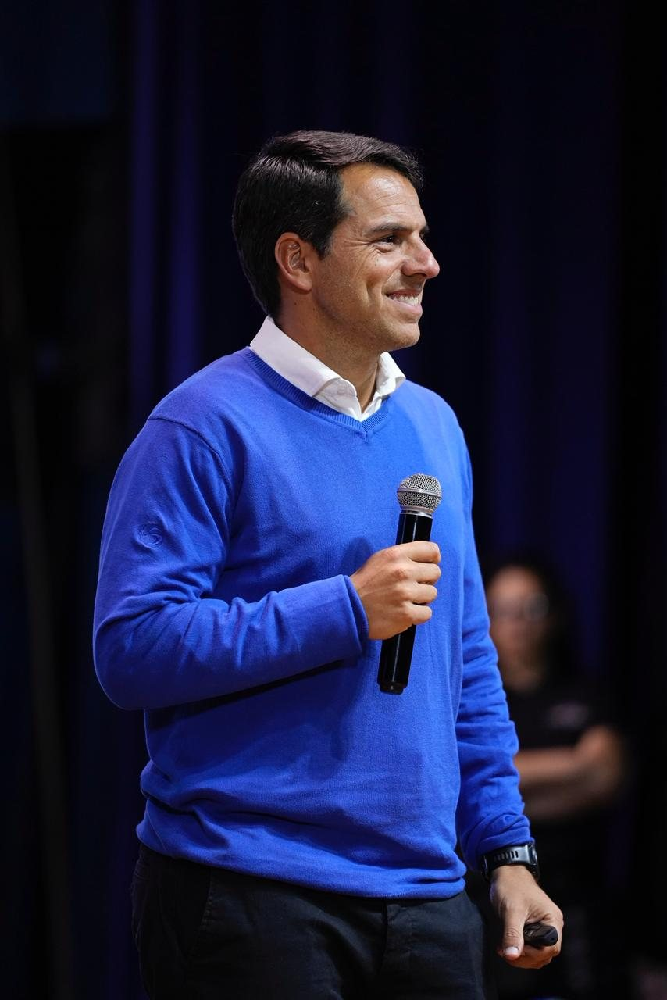
Terceiro nome reveladoConvidado do Summit 2026
Palestra
Como desenvolver competências para ser um grande treinador
Hard skills, soft skills e gestão de carreira para desenvolver treinadores em diferentes níveis de atuação.
Mais de 25 anos de experiência nacional e internacional, com atuação no futebol profissional e nas categorias de base.
Experiência que vem de campo
Entre outros clubes de sua trajetória profissional.
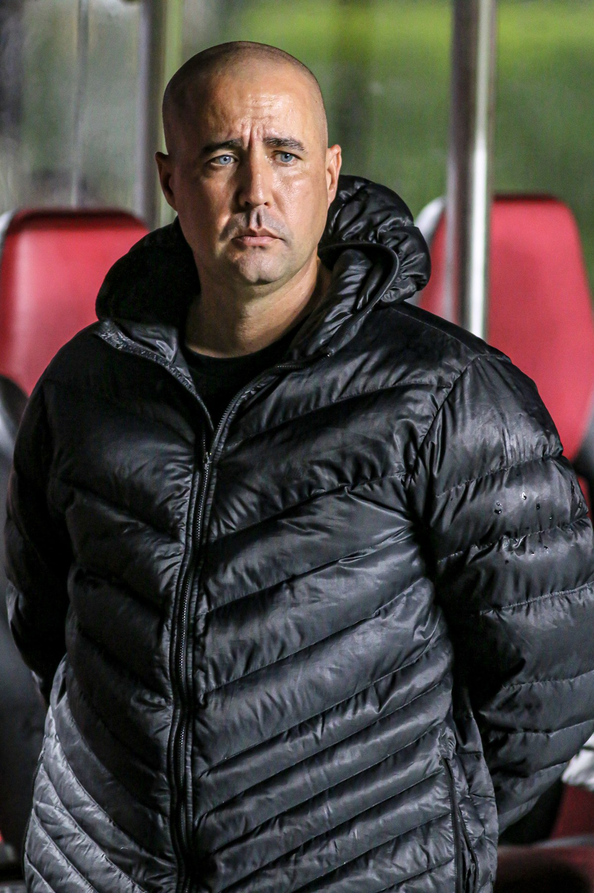
Quarto nome reveladoConvidado do Summit 2026
Palestra
O aprendizado real entre acertos e erros na preparação de grandes jogos
Treinador com licença PRO da CBF Academy e experiência no futebol profissional e nas categorias de base, no Brasil e na Espanha.
Experiência que vem de campo
São BernardoRemo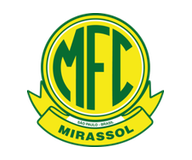
Mirassol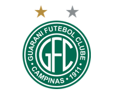
Guarani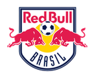
Red Bull Brasil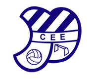
CE EuropaEntre outros clubes de sua trajetória profissional.
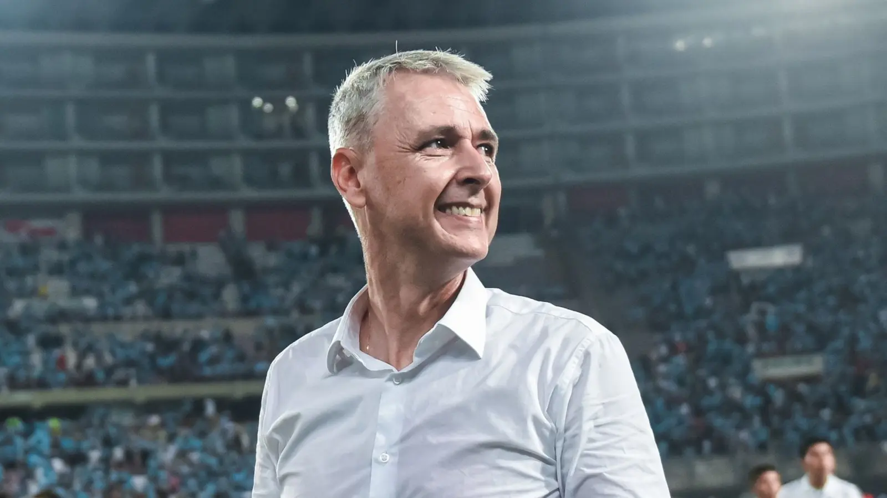
Quinto nome reveladoConvidado do Summit 2026
Palestra
As ideias, os métodos e as decisões de Tiago Nunes nos diferentes contextos do futebol brasileiro e sul-americano
Como um treinador organiza suas equipes no futebol de elite? Tiago Nunes compartilha experiências de sua carreira e explora as ideias, os processos e as decisões que orientaram a construção e a organização de suas equipes em diferentes contextos competitivos.
Experiência que vem de campo
 Athletico-PR
Athletico-PR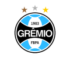
Grêmio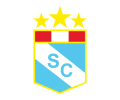
Sporting CristalEntre outros clubes de sua trajetória profissional.
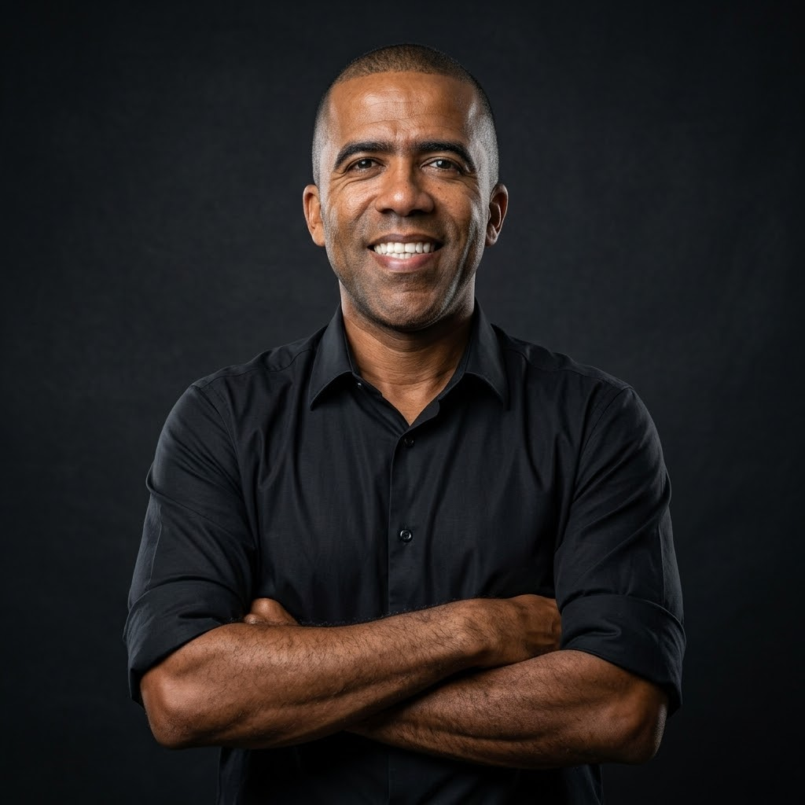
Sexto nome reveladoConvidado do Summit 2026
Palestra
Rotinas, organização das análises e comunicação com a comissão técnica no futebol profissional
Da análise em vídeo ao treino estratégico: organização de relatórios, contextualização de dados e processos de feedback para corrigir e valorizar o desempenho da equipe.
Experiência que vem de campo
 Grêmio
Grêmio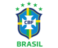
Seleção Brasileira · CBF Flamengo
Flamengo Palmeiras
Palmeiras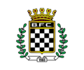
BoavistaEntre outros clubes de sua trajetória profissional.
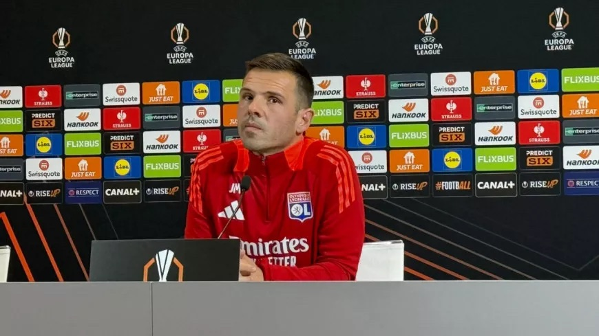
Sétimo nome reveladoConvidado do Summit 2026
Palestra
A preparação de uma equipe campeã em um cenário de elevada densidade competitiva
Como manter o rendimento coletivo e responder às exigências do topo quando os jogos se acumulam. Um caso de estudo da época 2020–21 do LOSC, campeão de França.
Experiência que vem de campo
Entre outros clubes de sua trajetória profissional.
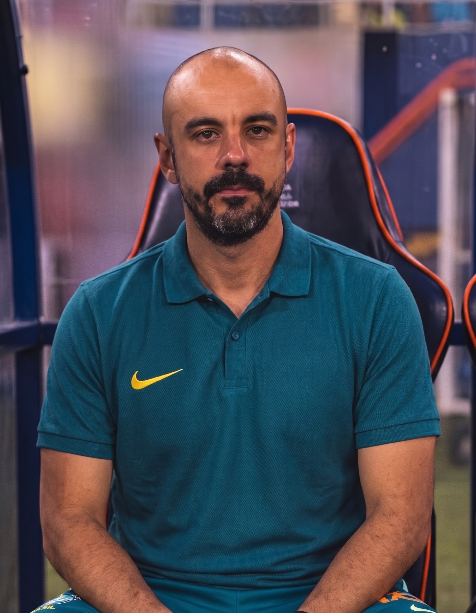
Oitavo nome reveladoConvidado do Summit 2026
Palestra
Pontos comuns e diferenças entre clube e seleção, com as possibilidades e os cuidados no uso da inteligência artificial
Mais de 15 anos de experiência, com passagens por Corinthians, Flamengo e Athletico-PR e atuação na Seleção Brasileira.
Experiência que vem de campo
 Seleção Brasileira · CBF
Seleção Brasileira · CBF Corinthians
Corinthians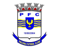
Paulínia FCEntre outros clubes de sua trajetória profissional.
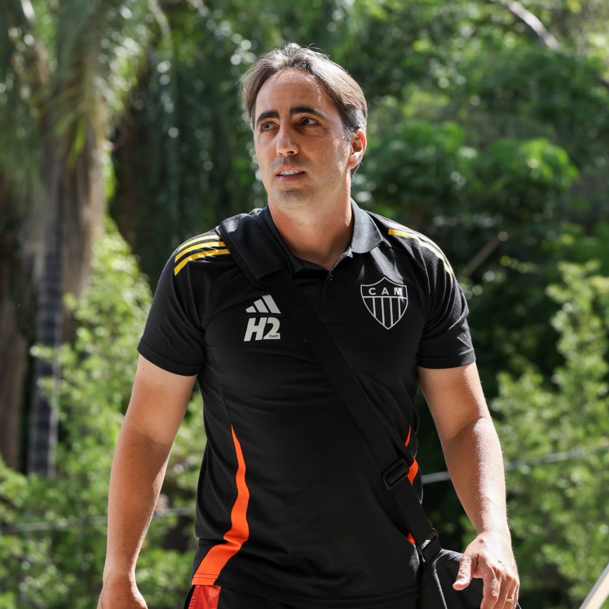
Nono nome reveladoConvidado do Summit 2026
Palestra
Análise de situações reais e como elas foram administradas na tentativa de buscar vantagens
Conteúdos táticos aplicados em cenários reais: situações de jogo e decisões para buscar vantagens.
Experiência que vem de campo

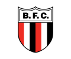
Entre outros clubes de sua trajetória profissional.
Nome em segredo
Revelação em breve
Nome em segredo
Revelação em breve
Reserve na agenda
Novembro de 2026.
Das 19h às 23h30, ao vivo.
Dois professores ao vivo por noite e dois conteúdos gravados entregues em cada dia. Nomes e temas serão anunciados em breve.
Primeira noite
19h às 23h30 · ao vivoTema em breve
Tema em breve
Entregues neste dia
Tema em breve
Tema em breve
Segunda noite
19h às 23h30 · ao vivoTema em breve
Tema em breve
Entregues neste dia
Tema em breve
Tema em breve
Terceira noite
19h às 23h30 · ao vivoTema em breve
Tema em breve
Entregues neste dia
Tema em breve
Tema em breve
Para quem é o Summit
Para relacionar novas referências com o trabalho da comissão técnica.
Para ampliar as perspectivas com que você observa e interpreta o jogo.
Para aproximar experiências de diferentes contextos dos desafios do desenvolvimento.
A experiência TotalFut
Depoimentos de alunos sobre cursos e eventos anteriores da TotalFut.
“Agregou muito no meu dia a dia dentro do clube que trabalho, sendo que várias situações implementei no meu dia a dia.”
“O que valorizou ainda mais o curso foi os professores que ministraram o mesmo, com ampla sabedoria e exemplos visuais.”
TotalFut Summit Internacional 2026
Serão dois lotes de inscrição. Os valores e as condições ainda estão em segredo. Acompanhe o @totalfutbr para conhecer os próximos convidados e o anúncio do início das vendas.
Dois lotes. Valores em breve.
O primeiro acesso à pré-venda.
Valor e condições em breveA próxima etapa das inscrições.
Valor e condições em breveOs novos nomes e o início das vendas serão anunciados no Instagram da TotalFut.
Acompanhe o Summit
Os convidados e o início das vendas serão anunciados no Instagram da TotalFut.
Siga o perfil para acompanhar os novos nomes, os temas das palestras e o anúncio de abertura das vendas.
Acompanhar no Instagram As próximas novidades do Summit estarão nas publicações do perfil.Nos dias 23, 25 e 27 de novembro de 2026, das 19h às 23h30. Cada dia terá dois professores ao vivo e dois conteúdos gravados entregues na mesma data. Os temas e a ordem das apresentações serão anunciados em breve.
Não. O Summit será realizado on-line, com apresentações ao vivo.
Sim. As apresentações ficam gravadas após o evento, com acesso vitalício para quem se inscrever.
Julian Tobar, Cristian de Souza, Gabriel Bussinger, Ricardo Catalá, Tiago Nunes, Lucas Oliveira, Jorge Maciel, Bruno Baquete e Leandro Zago já estão confirmados. Os demais convidados e temas serão anunciados em sequência. A distribuição das apresentações por dia também será divulgada em breve.
A pré-venda será anunciada em breve. Haverá dois lotes, com valores e condições divulgados na abertura. Acompanhe o Instagram @totalfutbr: o início das vendas será anunciado por lá.